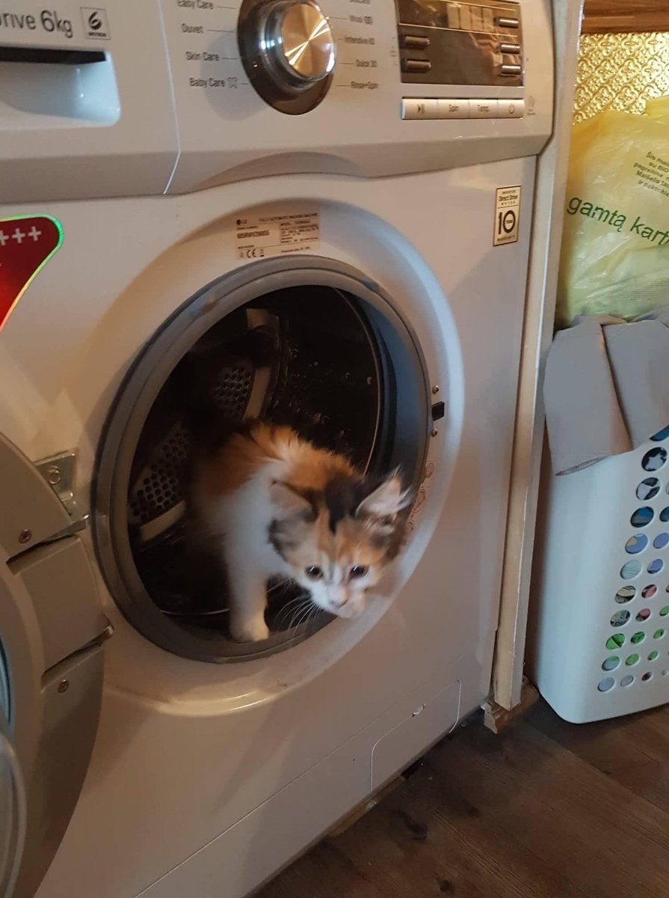

RIP Terry A. Davis
August 11th marks the 1 year of his passing.
It is a shame such a man had to die, he was an idol to me. I feel like many people can learn a lot from him. His demise, his work.
It takes a lot of dedication, patience and intellect to create a fully fledged OS single handedly over 10 years.
And although I may have 1/20th of these, he still made me strive for these values.
Light a candle in his honor.
I am also reopening a small archive of Terry's stuff I have collected. Check it here.

zxyz on top
I'm a 16 y/o student from Lithuania.
Used to be a developer. Although I still didn't completely lose interest.
I absolutely hate hugboxing. I try to be as honest as possible, which sometimes means even bad things.
The internet went down the shitter, I made this site as a way to leave a mark in this centralized mess.
I like messing with technology, sipping boomer monster and remembering the good ol' days.
Contact me:
E-mail: zxyz@卍.club or cmp@airmail.cc
Telegram: @zxyz0
IRC: zxyz @ irc.rizon.net
Discord: zxyz#8479
There are also loads of accounts that I no longer use, such as Twitter.
My work:
Github: x-t
Gitlab: f00f
Visit nigger.technology!
My most complex project was okforms.
The piece of shit that made me the most headaches was ebin-dos.
Since I lost almost all respect for open source advocates and projects, I decided to keep this website closed. Even if the source code is there, it's unlicensed.
This is my cat :)

{kind=link}